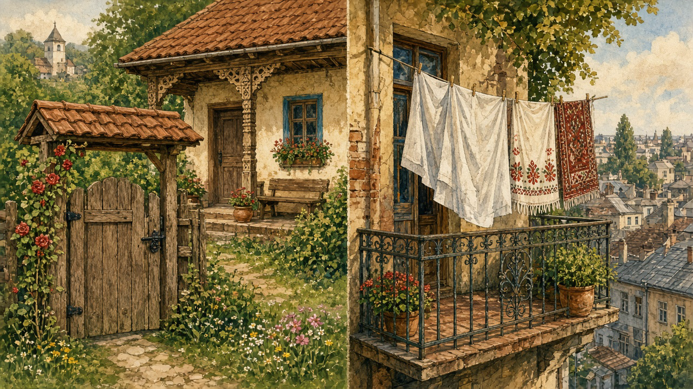
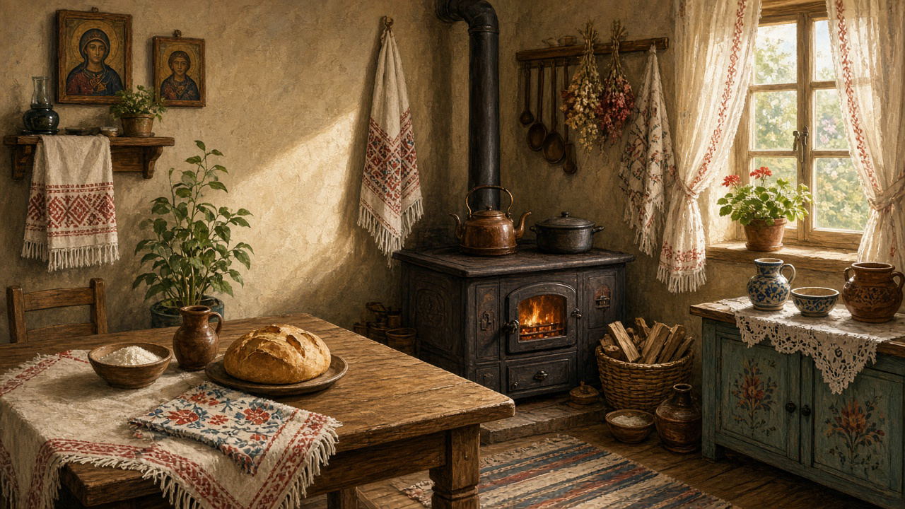
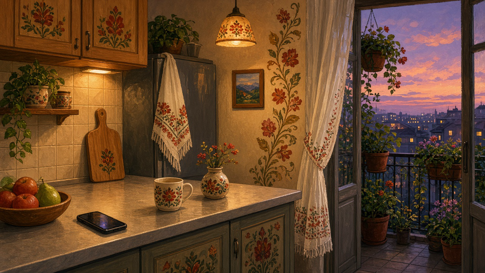

The house
What people mean by casă when they are not talking about an apartment block. A yard, a gate, a stove, and the rooms that still hold the year.
Yard first
The house faces the yard more than the street. A fence or a carved wooden gate, the poartă, marks the edge. In Maramureș the gate can be taller than the house and carved with rope and sun and a short prayer. Elsewhere it is plainer: boards, a latch, a dog who knows who belongs. Inside the fence sit the well if there is one, the woodpile, a shed for tools, and often a small summer kitchen so the main room does not take the heat of every meal. Chickens still walk through a lot of these yards. The lawn is not the point. Space to work is.
The porch and the rooms
Many older houses have a pridvor, a porch or open gallery along the front, with a bench and a place to leave muddy boots. The door opens into the main living room, the camera, where the stove sits. That stove, the sobă or the older cuptor, is heat, bread, and the warm wall you lean against in January. A second room is often kept cleaner and colder: the good room, with the better bed, the embroidered towels, and the icon corner. Guests sleep there. The family lives by the stove. Attics and cellars hold onions, jars, and what the autumn put up. Not every house still keeps that split. Enough of them do that you can feel it when you walk in.
What hangs on the wall
The icon corner faces east when the builders could manage it. A lamp, a towel draped over the frame, and sometimes a photograph of someone who is gone. The ștergar from the crafts page belongs here as much as on a table. Crosses and calendars share the wall with a clock that may or may not run. The bed cover, the woven rug on the floor, and the cloth on the table are the house’s soft armor against a long winter. None of this is decoration in the shop sense. It is how a room says it is kept.
Materials and change
Older village houses were wood in the mountains and adobe or brick in the plains, with a steep roof against snow. Newer ones are concrete and tile, and the pridvor shrinks or disappears. The gate may now be metal. The well may be capped and the water comes from a pipe. What remains, even in a lot of those newer yards, is the order: fence, yard, kitchen heat, a clean room for guests, and a place for the icon. Museums of the village have moved whole houses onto grass so you can walk through without knocking. Useful, and a little empty. The living version still has a dog, a broom by the door, and the smell of something on the stove.
This page is the map of that arrangement, not a building guide. The crafts, the year, and the recipes all sit inside a house like this, whether the roof is wood or tin. The carved gate on this page is kin to the parish gates around the wooden churches of Maramureș. The same yard holds the well, and it is where the children’s games start when the chalk comes out. Market day is when that yard empties toward the square — see the market.
Daily life
Ordinary rhythms around the stove, then how those rhythms moved into apartments, balconies, and city work — and what still sits on the table.

Then

The day started at the stove. Wood in, kettle on, bread cut thick. The sobă was clock and hearth: heat for the room, heat for the pot, and the warm wall children leaned against while boots dried by the door. Water came from the well in the yard, or from a pump shared with the neighbors. The yard itself was work — chickens, woodpile, tools — not a lawn to look at. The icon corner kept its lamp and its towel; you passed it going out and coming in.
Bread mattered more than most shop food. A round loaf on the table meant the house was fed. Market day emptied the yard toward the square — eggs, cheese, a length of cloth — and brought back what the garden could not grow; see the market. At home the soft work continued: embroidery, weaving, a ștergar for a wedding or a guest bed. Those crafts lived in the same rooms as the stove; the crafts page is their map.
How it transformed

Electricity and gas remade the kitchen. The wood stove gave way to a range and a fridge; the phone sits on the counter where a bowl of flour used to wait. Many families left the village for apartment blocks — blocuri — where the yard shrinks to a balcony with pots and laundry. Work moved outside the village: factory, office, road, another country. The porch bench became a kitchen chair under a pendant light. Sundays still often mean church, even when the rest of the week does not; that rhythm sits with Orthodoxy and the seasons of the year.
What stays
Some things refuse to leave. Bread still lands on the table. Embroidered towels and folk patterns travel into city flats — on a fridge door, a curtain hem, a painted cabinet. The icon corner survives in many homes, sometimes a shelf, sometimes only a lamp and a framed saint. And the word people reach for is still acasă: not the floor plan, but the sense that someone kept the room. The house changed shape. The claim of home did not.